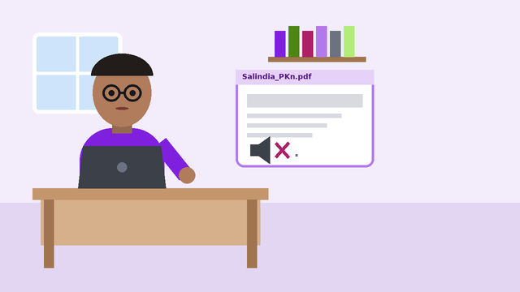
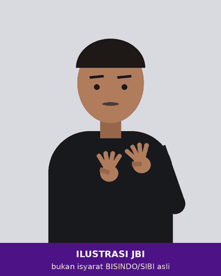

Halo, Raka
Kewarganegaraan · WU25-00003 · 2 SKS · Mata Kuliah Wajib Umum
Pertemuan 1 · Konsep, Tujuan, dan Fungsi Pendidikan Kewarganegaraan
Langkah 1 dari 5 · Pemicu
0% selesaiMateri per pertemuan
Sesuai RPS: 16 pertemuan, 2 × 50 menit. Ketuk pertemuan untuk melihat ringkasannya.
Tugas
Komponen nilai
Semua penilaian bisa diambil dalam format alternatif. Ajukan lewat Akomodasi belajar.
Cara belajarmu
Setiap pertemuan akan dibuka dengan format ini.
Akomodasi belajar
Butuh waktu ujian tambahan, juru bahasa isyarat, atau materi dalam format lain? Ajukan ke ULD Itera.
Pertemuan 1 dari 16 · 2 × 50 menit · CPMK 2-1 · Contextual Learning
Konsep, Tujuan, dan Fungsi Pendidikan Kewarganegaraan
Kisah Dimas
Apa yang akan kamu pelajari?
- Memahami konsep, tujuan, dan fungsi Pendidikan Kewarganegaraan.
- Menjelaskan sumber historis, sosiologis, dan politis PKn di Indonesia.
- Menunjukkan sikap positif terhadap PKn untuk memperkuat jati diri keindonesiaan.
Sub-CPMK Pertemuan 1 · CPMK 2-1 · Sumber: Pendidikan Kewarganegaraan untuk Perguruan Tinggi (Tim Dikti, 2016)
Kontrak kuliah
- Bobot2 SKS · 2 × 50 menit per pertemuan
- MetodeContextual Learning (P1–7), Case Based Learning (P9–15)
- PenilaianUTS 30% · Presentasi 50% · Tugas kelompok 20%
- UjianUTS di Pertemuan 8, UAS di Pertemuan 16. Format alternatif tersedia.


[Dimas] Saya membuka salindia kuliah, tetapi pembaca layar saya diam saja.
[Dimas] Ternyata file-nya hasil pindaian. Isinya hanya gambar.
[Dimas] Teman saya menawarkan diri membacakan. Saya berterima kasih, tetapi saya ingin belajar mandiri.
[Narator] Apakah ini soal kebaikan teman, atau soal hak Dimas?
Dimas adalah mahasiswa low vision. Dosen membagikan salindia PDF hasil pindaian. Pembaca layar Dimas tidak bisa membacanya sama sekali.
Tidak ada jawaban salah, dan pilihanmu tidak dinilai.
Apa itu Pendidikan Kewarganegaraan?
Pendidikan Kewarganegaraan (PKn) membantu mahasiswa menjadi warga negara yang memahami hak dan kewajibannya, cinta tanah air, dan punya tanggung jawab sosial.
Tujuannya adalah membentuk warga negara yang baik dan berjiwa Pancasila: religius, humanis, nasionalis, demokratis, dan berkeadilan.
Mengapa PKn diperlukan?
Pembukaan UUD 1945 menyebut salah satu tujuan negara: mencerdaskan kehidupan bangsa. PKn ikut mewujudkannya dengan menyiapkan warga yang sadar hak, kewajiban, dan perannya di masyarakat.
Tiga sumber PKn
Semangat kebangsaan lahir dari perjuangan melawan penjajahan. Sejak awal kemerdekaan, pendidikan tentang warga negara diajarkan agar nilai perjuangan itu terus hidup.
Indonesia adalah masyarakat majemuk: suku, agama, bahasa, dan kemampuan yang beragam. PKn membantu kita hidup bersama secara adil.
Negara mewajibkan PKn lewat UU No. 20 Tahun 2003 tentang Sisdiknas dan UU No. 12 Tahun 2012 tentang Pendidikan Tinggi.
Dinamika dan tantangan PKn saat ini
Nilai kewarganegaraan selalu diuji oleh perubahan zaman. Beberapa tantangan yang kita hadapi sekarang:
- Banjir informasi dan hoaks di media sosial.
- Intoleransi dan menguatnya perpecahan.
- Diskriminasi terhadap kelompok rentan, termasuk penyandang disabilitas.
- Rendahnya partisipasi warga dalam urusan publik.
Kembali ke kisah Dimas
Kasus Dimas adalah contoh nyata tantangan diskriminasi tadi. Dimas adalah warga negara yang setara, dan hambatannya ada pada materi yang tidak bisa diakses, bukan pada dirinya.
Karena itu, menyediakan materi yang aksesibel bukan soal kebaikan hati. Itu bagian dari yang wajib dipenuhi kampus.
Bandingkan dua cara pandang
| Aspek | Cara pandang kasihan | Cara pandang hak |
|---|---|---|
| Sudut pandang | Kekurangan ada pada orangnya | Hambatan ada pada lingkungan |
| Sikap | Iba, membantu tanpa bertanya | Bertanya dulu, menghormati pilihan |
| Dasar | Kebaikan hati | Kewajiban hukum dan etis |
Dasar hukum
“… melindungi segenap bangsa Indonesia dan seluruh tumpah darah Indonesia dan untuk memajukan kesejahteraan umum, mencerdaskan kehidupan bangsa, dan ikut melaksanakan ketertiban dunia …”
“Kurikulum Pendidikan Tinggi … wajib memuat mata kuliah: a. agama; b. Pancasila; c. kewarganegaraan; dan d. bahasa Indonesia.”
“Setiap warga negara berhak mendapat pendidikan.”
Hak pendidikan penyandang disabilitas meliputi pendidikan yang bermutu secara inklusif dan khusus, serta akomodasi yang layak. (ringkasan, cek naskah resmi)
Jurnal pribadimu
Jawab satu atau semua pertanyaan ini. Tidak ada jawaban benar atau salah.
- Menurutmu, mengapa PKn tetap penting untuk masa depan Indonesia?
- Tantangan apa yang paling terasa di sekitarmu: hoaks, intoleransi, atau diskriminasi?
- Apa yang berubah dalam pandanganmu setelah mendengar kisah Dimas?
Kamu tidak wajib menceritakan diagnosis atau pengalaman pribadi. Jurnal hanya dibaca dosen.
Periksa satu materi kuliah
PKn mengajak kita berperan nyata, dimulai dari hal yang dekat. Pilih satu file materi dari mata kuliah lain, lalu centang yang sudah terpenuhi.
0 dari 5 terpenuhi
Rekomendasi perbaikan dari kelompokmu akan diteruskan ke Unit Layanan Disabilitas Itera.
Ringkasan dan rencanaku
Materi pertemuan ini diujikan pada Tes Tulis (UTS), CPMK 2-1, bobot 2%.
Kegiatan langkah ini ada di bawah. Tekan Lanjut setelah selesai.